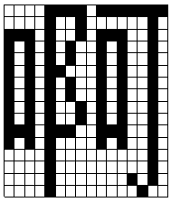

由许多字模数据所组成的文件就是"字模库"。比如UCDOS汉字系统中的文件"HZK16"就是包含了6768个国标汉字字模的一个"库"。当然，描述字形的技术还有其它的，并不是仅此一种，但上述方法在处理时比较简单，十分适合描述较简单的字形。
有了上述这些基础知识，我们现在就可以来具体地研究BIOS提供的图形功能了。如前所述，"点"是构成复杂图形的基本单元，我们现在就来学习如何在屏幕指定位置画上一个点。10H中断提供的0CH功能可用于在图形模式下画点，这个功能的用法如下：
功能号：0CH
用 途：在图形屏幕上的指定位置画一个
"点"（像素）
参 数：CX=指定位置的X坐标
DX=指定位置的Y坐标
AL=颜色值
调用：INT 10H
返回：无
在应用这个功能之前大家先要清楚屏幕坐标是如何规定的。在第六章我们说到过在字符模式下屏幕坐标原点在左上角，X轴方向向右与习惯相同。而Y轴方向向下，正好与习惯相反。在图形模式下屏幕依旧如此，只不过坐标的划分更细了。下面这个程序可在屏幕上画出一个彩色的方块来：
code segment
assume cs:code,ds:code
org 100h
main proc near
jmp short start ；跳过数据区
l_u dw 20,20 ；方块左上角的（X，Y）坐标
r_d dw 100,150 ；方块右下角的（X，Y）坐标
start:
mov ax,0004h ；设置图形显示模式4
int 10h
mov si,word ptr r_d ；右下角的X坐标送入SI寄存器
sub si,word ptr l_u ；减去左上角的X坐标，计算X方向上的点数
mov cx,word ptr l_u ；左上角X坐标送入CX寄存器
b_loop1:
mov di,word ptr r_d+2 ；右下角的Y坐标送入DI寄存器
sub di,word ptr l_u+2 ；减去左上角的Y坐标，计算Y方向上的点数
mov dx,word ptr l_u+2 ；左上角的Y坐标送入DX寄存器
mov al,2 ；选择洋红色
b_loop2:
mov ah,0ch ；利用10H中断的0CH功能画点
int 10h
inc dx ；Y坐标加1，
dec di ；已画完Y方向上所有的点了吗？
jnz b_loop2 ；若没画完Y方向上全部点，转B_LOOP2继续
inc cx ；X坐标加1，准备画下一条竖线
dec si ；X方向上所有竖线都画完了吗？
jnz b_loop1 ；若未画完X方向上全部竖线，转B_LOOP1继续
mov ah,0 ；等待键盘输入
int 16h
mov ax,0003h ；设置字符显示模式3
int 10h
int 20h ；结束进程
main endp
code ends
end main
在第8章我们给出过一个称为STARMAP的程序，这个程序可以从UCDOS的字模库文件HZK16中读出一些数据，加以处理后在字符屏幕上显示出一幅由星号构成的图形。下面这个程序由STARMAP略做修改而成：
data segment
assume ds:data
fname db 'hzk16',0 ；UCDOS汉字系统的显示字模库
buffer db 32 dup(0) ；文件缓冲区
off dw 1520h,0002h,3340h,0001h ；所需数据在字模库中的偏移位置
dw 18e0h,0000h,74a0h,0002h, 2520h,0001h
msg db Press any key to display the next font.',0dh,0ah,24h
data ends
code segment
assume cs:code
code segment
assume cs:code
main proc far
mov ax,data ；初始化DS寄存器
mov ds,ax
mov dx,offset fname ；打开字模库文件
mov ax,3d00h
int 21h
jc exit ；若文件操作出错，转EXIT结束
mov cx,5 ；准备显示5个汉字
mov bx,ax ；将文件句柄送入BX寄存器
mov si,offset off ；SI寄存器指向偏移量表
loop1:
push cx ；暂存CX寄存器中的计数值
mov ax,0004h ；设置图形显示模式4
int 10h
mov ah,09h ；显示字符串
mov dx,offset msg
int 21h
lodsw ；取得偏移量的低字
mov dx,ax ；将偏移量的低字送入DX寄存器
lodsw ；取得偏移量的高字
mov cx,ax ；将偏移量的高字送入CX寄存器
mov ah,42h ；移动文件读写指针
mov al,00h
int 21h
jc exit ；若文件操作出错，转EXIT结束进程
mov ah,3fh ；读入32个字节至文件缓冲区中
mov dx,offset buffer
mov cx,32
int 21h
jc exit ；若文件操作出错，转EXIT结束
call disp ；调用DISP子过程显示一个汉字
mov ah,0 ；等待键盘输入
int 16h
pop cx ；恢复CX中的计数值
loop loop1 ；转LOOP1继续
exit:
mov ax,0003h ；设置字符显示模式3
int 10h
mov ah,4ch ；结束进程
int 21h
main endp
disp proc near ；DISP子过程
push bx ；保存寄存器
push si
mov cx,16 ；处理32个字节（16个字）
mov si,offset buffer ；SI寄存器指向文件缓冲区
mov dx,100 ；汉字左上角的Y坐标送入DX寄存器
loop2:
push cx ；暂存CX寄存器中的计数值
mov cx,152 ；汉字左上角的X坐标送入CX寄存器
mov di,16 ；处理一个字的16个Bit
lodsw ；取得一个字的数据
xchg ah,al ；交换高低字节
loop3:
shl ax,1 ；数据左移1位，最高位移入CF标志
push ax ；保存移位后的结果
jnc next_dot ；若移出的位是0，转NEXT_DOT
mov ah,0ch ；画一个洋红色的点
mov al,2
int 10h
next_dot:
inc cx ；X坐标加1，准备处理下一个点
pop ax ；恢复移位后的结果
dec di ；16个Bit处理完了吗？
jnz loop3 ；若未处理完16个Bit，转LOOP3继续
inc dx ；Y坐标加1，准备处理下一条线
pop cx ；恢复CX寄存器中的计数值
loop loop2 ；转LOOP2继续
pop si ；恢复寄存器
pop bx
ret ；返回主过程
disp endp
code ends
end main
disp code pop pop ret endp ends end |
si bx main |
；恢复寄存器 ；返回主过程 |
|||||||||||||

能够在不启动汉字系统的情况下直接在屏幕上显示出汉字的确是件很有趣的事，很多电子游戏都具有这样的能力。说句实话，这并非是一件很难办的事情。我们已经知道字符是由一组点构成，而现在我们又掌握了画点的方法，那么理所当然我们能够在屏幕上"画"出字符和汉字，问题的关键就在于每个点应画在什么地方。这首先需要将一组点的排列数字化，我们刚刚说过这个问题，下面我举出一个汉字的实例，来更明确地说明这个问题：
图9-3就是GB-2312－80汉字库的第一个字--"啊"的点阵，同西文字符相比，汉字的点阵规模要大一些，达到16 16点。每一行上的16个点可用两个字节表示，描述一个汉字共使用32个字节。我们要解决的第一个问题就是在获得了字模数据后如何处理这32个字节。DOTMAP给出了一种算法。下面给出的这个子程序同样可以完成这项工作，不过它使用了一个新的指令--TEST（位测试）。